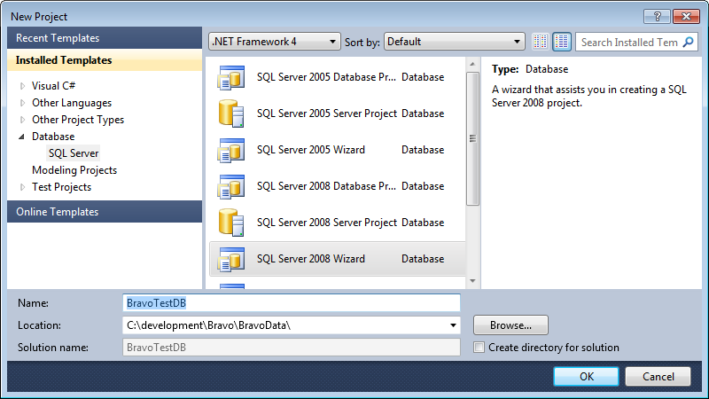
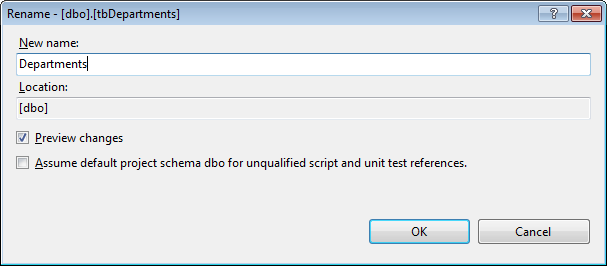
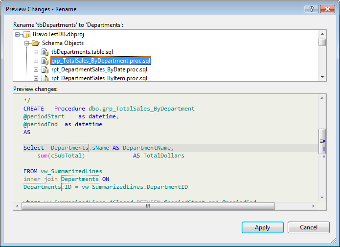
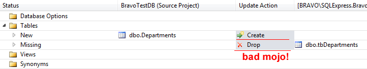
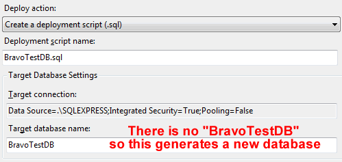
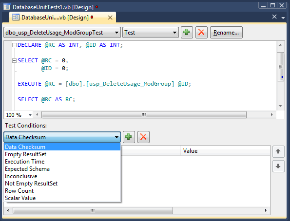

I have an existing database project I’m working with from around 2002. The database is for a restaurant point of sale system I wrote called BravoPOS. One of my original customers (ok.. my only customer) is now opening another restaurant and is interested in deploying BravoPOS at this location also.
The system has been running fine since 2002. But with the new restaurant, I’ll be maintaining two, maybe even three or four systems if my restaurant point of sale monopoly takes off!
This is going to introduce some complexity.
At the moment there is no “official” copy of the database save what’s on the server at the restaurant. If I ever had a large POS customer base, I would absolutely need an easy way to maintain multiple versions of the database. I need to be able to roll forward and backward and I want to know at what point of time and for which deployments a specific schema of the database applies.
Second, I’ve changed my mind on a couple things and would like to rename or “refactor” them without breaking my existing installation. I was one of those guys who in 2002 applied Hungarian notation to my database. I prefaced every table with “tb” and every string column with ‘s’, stored procedures with usp. I would like to simplify things.
Rather than abandon the old system, I want to gracefully change these variables without causing a mistake.
There’s a bigger picture too
Database pain extends beyond my self inflicted side project into my real job where I work on an agile team. Due in part to the company’s culture, our projects have a differentiation between “those who code” (devs) and “those who do databases” (BI). This leads to a couple pain points where BI meets dev.
There is pain when keeping BI in sync with the project’s version control. Even with the most disciplined of BI resources, databases are hard to correctly version. Versioning is done with script files and checking those scripts into source control. It’s easy to forget to keep a script up to date.
Second, there’s pain when planning schema migration from the developer state to the deployment state. Even if you have a good versioning system, there’s no guarantee that someone hasn’t made optimizations to the production database. I would expect most admins are actively changing the production database in some way for performance.
Finally, there’s the issue of unit testing. Developer resources are well versed in the benefits of unit testing, but unit testing at the database level is typically not done. Since developer unit tests should not touch the database, short of an integration test how do you validate the expected behavior of the database?
Data Dude to the Rescue
The Visual Studio 2010 SQL Server Database Project type or as everyone outside of Microsoft’s marketing arm calls it “the data dude” can help ease some of this pain. It’s available if you have access to the Professional or greater SKU of Visual Studio.
To start with, I recommend using the wizard when creating a new database project:

This will make important an existing database schema a breeze. Once your done, open the Schema view to see everything data dude has created for you. Oh, and check it into source control!
Refactoring in your database
Want to rename a table or a column? You’ll be tempted to double click on a schema item and start renaming it like you would in SQL Server. Don’t! You want to use the built in refactoring commands. With the exception of dynamic SQL and any external dependencies it will kindly take care of renaming detected dependencies for you.

Here I’m renaming a table from tbDepartments to Departments. Notice the preview changes button. This let’s you see the affected objects and what will change.

The number of affected items above is a good reason why to use a refactoring tool like data dude. Departments are used in lots of reporting procedures. Changing this by hand could be messy and error prone.
Comparing Schemas
Using data dude, you can compare schemas between database projects or compare your current project to a database. It will give you an idea of what will need to be done to get one database to match the other. There’s an issue though if you look at what it wants to do to my Departments table:

According to Microsoft on a thread here schema compare doesn’t understand the “refactor log” which it uses at deployment time. Because of this I don’t focus on schema view except as a diff tool and I don’t use scripts from it.
Getting a real schema diff
When your are interested in getting some useful scripts out of data dude, you will need to use the deploy option. By default deploy “deploys” a SQL script file to a bin that you can run at your leisure.
There’s something really important to understand about the deployment option. Whether your script is created to generate a new database or to generate an update script to an existing database depends on on what you have specified as your deployment target under deployment options. To get a real diff between your deployment target and your refactoring, you need to specify it as your deployment target in the project properties Deployment tab:

Unit Testing… databases?
The term unit test is getting overloaded and its meaning ambiguous. My definition is that a unit test is a small bit of code whose purpose is to validate that the behavior of some other bit of code is behaving as designed. This means that the result of a unit test must be deterministic, not stochastic.
This is difficult to guarantee with a database since data changes the output of functions (stored procedures). To make a database unit testable, you must make it predictable. Data dude can help. It allows you to create a database on demand, populate it with test data and execute a series of unit tests against it
You can get all the gritty details on how to setup unit testing for databases here.aspx). What I thought was exceptional was the actual designer for creating database unit tests shown below:

The T-SQL to be executed goes into the box at the top. Test conditions are created at the bottom. The built in conditions are:
- Data Checksum: Verify that a hash of an output set matches a previously generated hash. You get a little window to execute your SQL from which computes a checksum for you. This then goes into the equals condition for the test.
- Empty ResultSet Verify no rows returned
- Not Empty Result set: Verify some rows returned.
- Row Count: Verify that X rows are returned where X is the number of rows.
- Execution Time: Must execute in less than hh:mm:ss.
- Inconclusive: The default condition
- Schema Comparison: Similar to a checksum but for schema. Allows you to execute a bit of SQL and set that as the target schema to match as a result set’s schema.
- Scalar value: Verify that a scalar value in a specific column / row matches another value. If you want to test a scalar such as a return value or output value, you will need to put it into a Select as shown in the Select @RC as RC example.
If the built in conditions do not meet your needs, there is extensibility support to create your own conditions. More on that here.
As you might guess, unit tests are configured to use MSTest. More flexibility here would be nice.
To sum up, Visual Studio SQL Server Database Projects can help manage the pain points where BI and dev come together such as with version control. It can help teams harden database designs with unit testing. Who knew such an awesome tool was hiding deep inside Visual Studio.